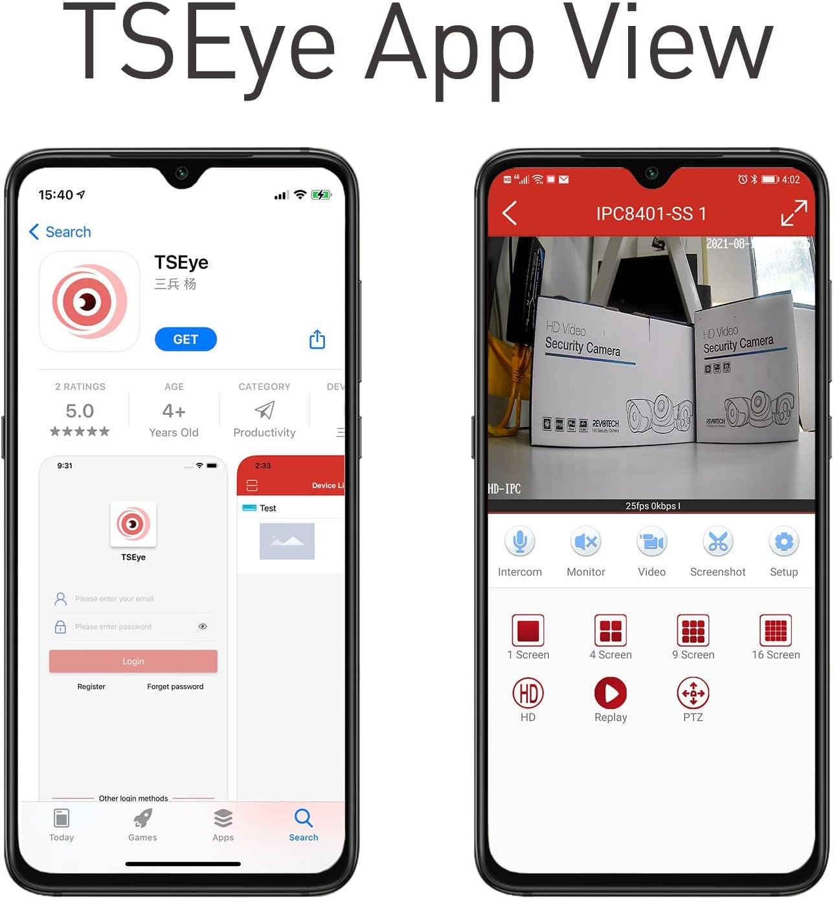
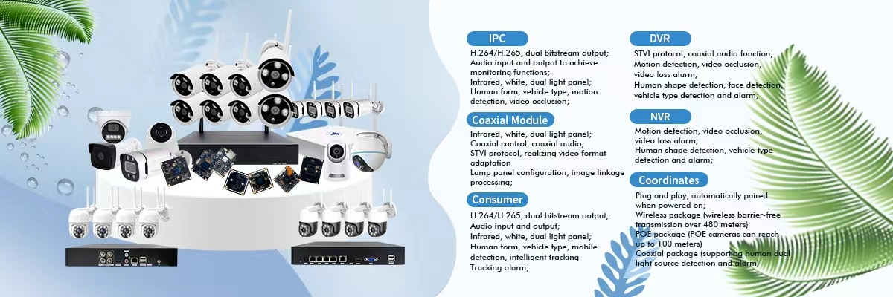

TSEye 深度盘点：一款能把多品牌 IPC 全部拉进同个 App 的安防管理工具
从设备接入通道、ONVIF 协议兼容、多品牌支持矩阵到云端告警存储，系统性梳理 TSEye 这款远程安防 App 的能力边界与适用场景。
为什么要认真盘点一款安防 App
家用和小微企业的视频监控系统，经常面临一个尴尬局面：摄像头和录像机来自不同厂商，每家都有自己的远程查看 App，手机上装了三四个还不够用，界面风格和操作逻辑完全不统一。TSEye 的出现，正是瞄准了这个痛点——它不是某一家摄像头厂商的专属配套，而是一款试图把多品牌 IPC 和 NVR 全部拉进同一个管理界面的通用型远程安防工具。
这款 App 在海外安防市场的渗透度不低，尤其在欧美家庭用户和小型商铺场景中，经常能在摄像头包装盒上看到"Works with TSEye"的标识。它的TSEye官网上有一份完整的品牌兼容清单和接入教程，但国内用户对它的了解相对有限，很多人买来支持 ONVIF 的摄像头却不知道还有这样一款兼容多品牌的远程管理工具。本文从实际使用场景出发，系统性盘点它的能力域，帮你判断它到底能不能成为你家监控系统的"统一入口"。

能力域一：设备接入——四条通道，总有一条能连上
安防远程管理的第一关永远是"怎么把设备加进来"。TSEye 在接入这个环节做得相当扎实，提供了四种互不依赖的通道，覆盖了从最顺畅到最极端的各种场景。
最常用的当然是扫码添加。每台 TSEye 生态的 IPC 或 NVR，机身上都贴有带二维码的标签，打开 App 点"+"直接扫，几秒钟就完成配对。扫码本质上是 App 自动识别设备序列号，走的是 P2P 云直连通道，和手动输入没有协议层面的区别。
局域网搜索是第二条通道。手机和设备在同一个 Wi-Fi 下时，App 可以主动扫描网段内的 ONVIF 设备，自动列出发现的 IPC 和 NVR。这对那些标签上没有二维码、或者二维码已经磨损看不清的老设备特别有用——只要设备还能正常联网，扫一下就能找到。
手动输入序列号或 P2P ID 是第三条通道，也是最稳健的兜底方案。当二维码坏了、局域网搜不到、或者设备在完全不同的网段甚至跨公网时，只要找到设备背面标签上的 Serial No. 或 P2P ID，手动敲进输入框就能走同样的 P2P 云通道完成连接。序列号一般是纯数字串，偶尔有前缀（比如"SN:"或"1-"）不需要输入前缀本身。
第四条通道是 ONVIF 协议对接。这一条能力很关键，因为它让 TSEye 的覆盖范围跳出了"自有品牌"的限制——任何支持 ONVIF 的 IPC，只要厂商为它注册了 TSEye 的 P2P 云服务，就能被 TSEye App 远程拉流。
四条通道的设计逻辑很清晰：扫码和搜索负责"快捷"，手动输入负责"兜底"，ONVIF 对接负责"扩圈"。用户不需要关心背后走的是哪条协议路径，能连上才是硬道理。
能力域二：ONVIF 协议兼容——把通用标准变成自己的护城河
如果说多通道接入解决的是"怎么连进来"的问题，那 ONVIF 协议兼容解决的就是"能连进来多少"的问题。
ONVIF 是安防行业 2008 年由安讯士、博世、索尼联合发起的开放标准，目前已经成为全球 IPC/NVR 互操作的事实基础。几乎所有主流厂商都加入了 ONVIF 论坛，设备标注"ONVIF Compatible"就意味着它遵循了统一的视频流拉取、PTZ 控制、事件订阅等接口规范。TSEye 母公司自身生产的 IPC 和 NVR 在出厂时就内置了 ONVIF 支持，反过来，任何支持 ONVIF 并注册了 TSEye P2P 云的第三方设备，也能被 TSEye App 远程查看。
在 ONVIF 的 Profile 分级体系中，TSEye App 在最基础也是最常用的 Profile S 级别上表现稳定——实时预览、录像回放、云台转向和变焦、设备发现这些核心功能都能正常工作。Profile G（录像存储检索）和 Profile T（双路视频流、H.265）的支持程度取决于设备固件本身的实现质量，TSEye 这边不做额外屏蔽。Profile Q 的零配置快速互操作在同品牌设备上体验最好。
这一层兼容性的价值在于：用户选购摄像头时不必局限于某一个品牌，可以按照预算和画质需求自由挑选，只要确保设备支持 ONVIF 并且厂商提供了 TSEye 配套固件或 P2P 云注册，就能统一进 TSEye App 管理。
能力域三：多品牌支持矩阵——已验证品牌与选购判断
TSEye 的兼容品牌列表在海外市场相当丰富。Jennov、Revodata、Revotech Industries、Tigris CCTV、VORGUT、Govision、Slot.NG 等厂商都在公开资料中明确标注使用 TSEye App 作为远程查看工具，覆盖了从单路 IPC 到 8 通道 PTZ NVR 套装的完整产品线。TSEye 自有品牌的 DVR、NVR、IPC 当然也在这个矩阵里，走的是原生 P2P 云直连，体验最顺畅。
面对一个不在列表里的未知品牌，用户有四种方法判断能否接入：看包装上有没有"Works with TSEye"或"Compatible with TSEye App"的标识；直接问厂商客服配套的远程查看 App 是不是 TSEye；自行TSEye下载 App 用局域网搜索试一下；或者查设备是否支持 ONVIF——ONVIF 兼容设备理论上都可以通过 TSEye P2P 云接入。
选购层面的实操建议也很明确：没有强生态绑定需求时，优先选 ONVIF 兼容 + P2P 云注册的设备，通用性最好；家里已经有 TSEye 或 Jennov 等品牌的 NVR，扩展时尽量同一品牌以保证最佳兼容性；避开无品牌白标摄像头，哪怕便宜也可能固件不完整、P2P 云连接不稳定。

能力域四：云端告警存储——给本地录像加一道保险
TSEye 的官方资料中把 Cloud Events 列为四大核心功能之一。简单来说，它会把告警触发的录像片段自动上传到 TSEye 的云端服务器，与设备端本地录像形成双重备份。
为什么需要这层备份？最直接的理由是防物理损坏。NVR 硬盘故障、IPC 内存卡损坏，或者更极端的——商铺被盗时连 NVR 一起抱走，本地录像会全部丢失，但云端还有一份告警录像可以取证。远程查看也更方便，需要调告警片段时直接在 App 里打开 Cloud Events 页面，不用远程拉流访问 NVR 硬盘。而且云端只存告警触发的片段，时间线干净，不用在全天录像里手动翻找。
当然，云端存储也有明确的局限。免费版通常只保留最近 7 天或 14 天的告警录像，更长时间可能需要付费升级。它只存运动侦测等事件触发的片段，定时录像还是只存在 NVR 硬盘上。每次告警触发上传会消耗设备端的上行带宽，网络上行慢的时候上传会有延迟。具体的存储策略和开通流程可以在TSEye文档里查到。
实操层面的建议是：至少保持 Cloud Events 开通，作为设备端存储损坏的兜底保险。重要场景比如商铺保险柜、家门口，建议做三重保险——NVR 本地录像 + Cloud Events + 关键告警时手动下载到手机本地。
短板也要说
盘点了四个能力域之后，有几个局限必须坦诚地指出来。
第一，TSEye 对国内主流安防品牌（海康威视、大华等）的覆盖并不理想。这些品牌有自己成熟的远程管理 App（萤石云、乐橙等），通常不会为自家设备开放 TSEye 的 P2P 云注册。如果你的监控系统已经是海康或大华的全套，TSEye 大概率帮不上忙。
第二，P2P 云通道的稳定性依赖厂商服务质量。TSEye 是相对老牌的海外安防 App，但国内用户跨公网访问时，P2P 穿透成功率和延迟表现不如国内厂商的云服务稳定。某些运营商网络环境下可能需要额外配置端口映射或使用中继转发。
第三，功能深度上，TSEye 更偏"远程查看"而非"集中管理"。它不支持多路录像的统一时间轴回放、不提供复杂的告警规则编排（比如跨摄像头联动、区域入侵自动 PTZ 追踪）、也没有 SaaS 级的多用户权限管理。如果你需要这些企业级能力，还是得找专门的 VMS 平台。
什么样的人该用它
综合能力与短板，TSEye 最匹配以下几类用户画像：
家用 DIY 监控用户，不想被单一品牌绑定。 你在装修时可能分别选了客厅的 PTZ 球机、门口的广角枪机、车库的 PoE NVR，来自两三个不同厂商，每家都只有一两台设备不值得为它专门装一个 App。TSEye 能把它们统一在一个界面里远程查看，省去了来回切换的麻烦。
小型商铺或工作室，预算有限但需要基本的安防管理。 4~8 路摄像头、一个 NVR，装 TSEye 之后店员和老板都能在手机上远程看店，Cloud Events 还能兜底防止硬盘被盗时录像丢失。不需要付费就能满足日常查看需求，比订阅专业 SaaS 划算得多。
喜欢折腾 ONVIF 生态的技术玩家。 你可能手上已经有几台 ONVIF 兼容的 IPC，试过 Blue Iris、ZoneMinder 等本地 VMS，但出门在外时总不如手机 App 方便。TSEye 作为轻量级的移动端补充，配合 ONVIF Device Manager 在局域网调试，体验相当顺手。
总结下来，TSEye 不是万能的安防中台，但在"多品牌 IPC 统一远程查看"这个细分场景里，它的 ONVIF 兼容广度、多通道接入稳健性、云端告警兜底这三点组合起来，确实能解决很多用户的实际痛点——尤其是那些不想为某一个品牌生态买单的人。整理这份盘点过程中用到的文档资料，我分别在GitHub、Gitee和GitCode上各做了一份备份，国内用户访问哪个方便就用哪个。